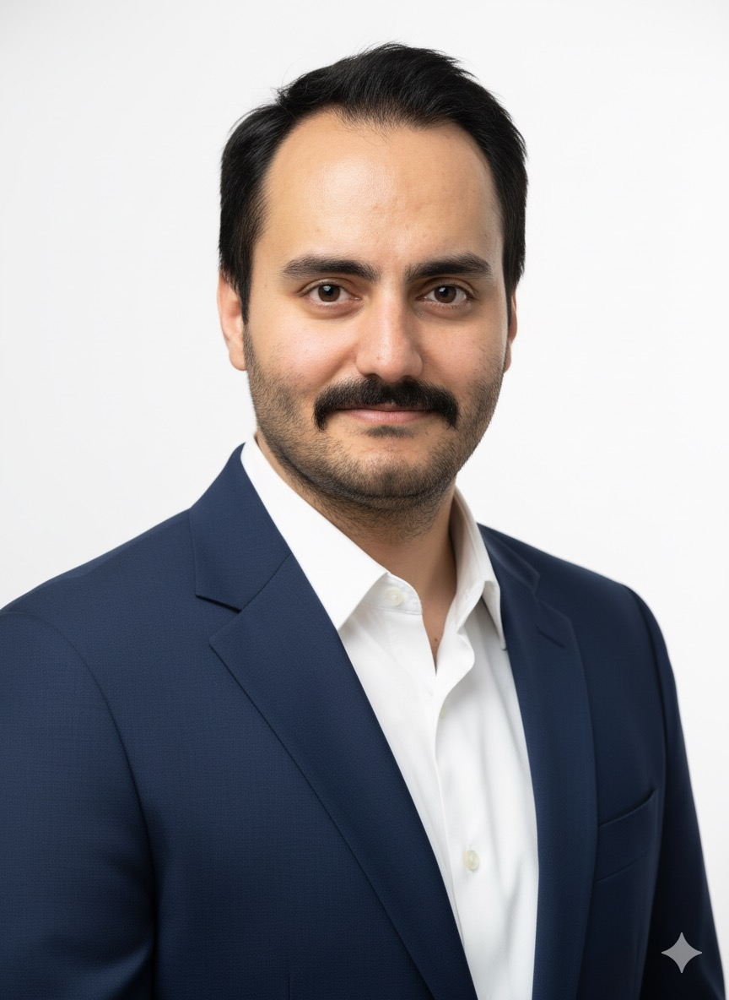

استراتژی و Growth
تعریف مسیر رشد، market positioning، segmentation، GTM و تبدیل اهداف کسبوکار به roadmap بازاریابی.
مدیر مارکتینگ و رهبر رشد با بیش از ۱۰ سال تجربه در ساخت موتورهای جذب، برند، retention و performance برای محصولات و کسبوکارهای دیجیتال.

مسیر حرفهای من از دیجیتال مارکتینگ و performance شروع شد و به مدیریت مارکتینگ، رشد، ساخت تیم و طراحی سیستمهای بازاریابی رسید.
در دکترتو، تپسی، ازکی و بیمیتو روی طیف وسیعی از مسائل کار کردهام: از acquisition و performance تا CRM، lifecycle، GTM، برند، کمپینهای 360 درجه، B2B و توسعه تیم.
چیزی که در همه این تجربهها برای من ثابت مانده، تبدیل مسئلههای پیچیده کسبوکار به تصمیمهای روشن، قابلاندازهگیری و قابلاجراست.
از طراحی استراتژی تا اجرای روزمره؛ با تمرکز روی رشد واقعی کسبوکار.
تعریف مسیر رشد، market positioning، segmentation، GTM و تبدیل اهداف کسبوکار به roadmap بازاریابی.
ساخت و بهینهسازی موتور acquisition، مدیریت channel mix، CAC، ROI و کمپینهای full-funnel.
طراحی lifecycle، segmentation، automation، cross-sell و برنامههایی که LTV و retention را بالا میبرند.
ساختاردهی تیم، OKR/KPI، استخدام، coaching و ایجاد هماهنگی بین marketing، product و business.
در هر نقش، تمرکزم روی ساختن سیستم و موتور رشد بوده؛ از acquisition و performance تا retention، برند، GTM و ساختن تیمهایی که بتوانند scale کنند.
Marketing Director · اکتبر ۲۰۲۴ تا امروز
Marketing Consultant · آگوست ۲۰۲۵ تا فوریه ۲۰۲۶
Acquisition Marketing Manager · مارس ۲۰۲۳ تا آگوست ۲۰۲۴
Head of Campaign Team · آوریل ۲۰۲۲ تا ژانویه ۲۰۲۳
Performance Marketing Manager · مارس ۲۰۱۹ تا ژانویه ۲۰۲۳
Digital Marketing Specialist · آوریل ۲۰۱۷ تا مارس ۲۰۱۹
از سال ۲۰۱۹ در کنار مسیر اجرایی، تدریس و sharing تجربه را ادامه دادهام.
مدیر مارکتینگ
مشاور مارکتینگ
مدیر بازاریابی جذب
مدیر تیم کمپین
مدیر بازاریابی عملکردی
متخصص بازاریابی دیجیتال
دانشگاهها، مدارس کسبوکار و رویدادهای تخصصی
shirin.shahab93@gmail.com